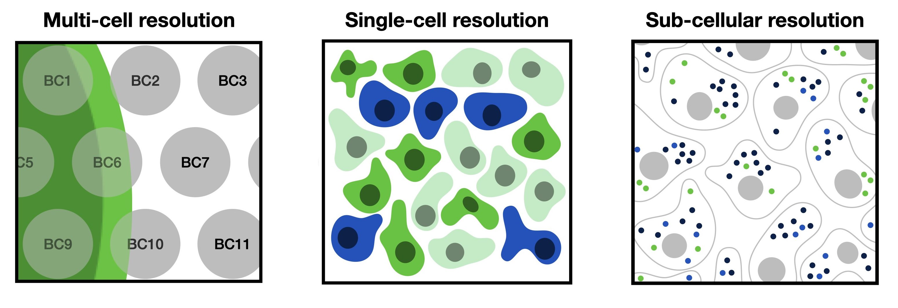

28. 空间解析的单细胞数据#
关键要点
空间解析的基因组学技术能够在保留空间背景的同时，测量基因组尺度的组学数据，并提供多细胞、单细胞和亚细胞分辨率，以解决多样的生物学问题。
28.1. 动机#
bulk 测序和单细胞基因组技术让我们能够在全基因组尺度上刻画并理解细胞的身份及其相互依赖关系。在此之前，本书所描述的所有单细胞技术，表征的都是从目标样本中解离出来、脱离原位的细胞。然而，一旦去除了细胞及其分子的空间背景，也就丢失了空间信息——而对许多生物学问题来说，空间信息是不可或缺的组成部分。空间解析基因组学既能测量全基因组尺度的组学数据，又能保留空间信息，从而解决了这一问题。
28.2. 空间分析测量概览#
空间解析基因组学可以用多种技术来测量，它们分别对转录组、蛋白质组或染色质可及性进行定量。然而，这些技术在通量、分辨率、灵敏度、多重检测能力和适用性方面各不相同。由于空间解析基因组学领域发展迅速，预计在未来几年内还会发生巨大变化，我们这里只根据捕获分辨率，介绍三大类空间组学技术。更多信息可以通过本节之后链接的综述和论文获取。 [Moffitt et al., 2022] [Walker et al., 2022] [Yue et al., 2023]
{kind=link}

图28.1 空间解析基因组学数据的分辨率各不相同，从多细胞、单细胞一直到亚细胞分辨率。#
大体上，可以把空间解析基因组学分为在多细胞、单细胞和亚细胞分辨率下进行测量的几类技术。下面我们会简要说明每一种尺度的意义，突出它们各自的优势与挑战，并向读者介绍属于相应类别的几种代表性技术。
28.2.1. 多细胞分辨率#
在多细胞分辨率下获得的空间组学数据，通常捕获的是若干个细胞合并在一起的组学测量值。因此，每个数据点都包含来自数量不等的细胞、且可能是不同细胞类型的信息。多细胞分辨率数据可以用反卷积（deconvolution）方法进行分解，从而得到每个点（spot）中不同细胞或细胞类型的比例。
多细胞分辨率数据通常以不同的分辨率捕获全转录组范围的基因表达谱。基于点（spot）的技术所能达到的分辨率介于 55 微米（Visium）到 10 微米（slide-seq）之间。其中一种广为人知、已商业化且很成功的技术，是 10x Genomics 提供的 Visium。我们将在教程中演示如何分析 Visium 数据并对其进行反卷积。
28.2.2. 单细胞分辨率#
在单细胞分辨率下获得的空间组学数据，要么直接在细胞所在的确切位置捕获单细胞，要么捕获单细胞尺度的点（spot）。基于点的方法包括 HDST、slide-seqV2 或 stereo-seq。这些方法能捕获整个转录组，但捕获效率仍然较低。
靶向（targeted）方法为在细胞确切位置进行测量提供了另一种选择。常见的例子有 MERFISH、seqFISH+、IMC 或多重 IHC（如 cyCIF 和 CODEX）。这些技术通常较为昂贵，且只能测量有限的特征空间。它们并不在预先定义的位置或网格上捕获点，而是测量单个转录本或细胞的位置。
28.2.3. 亚细胞分辨率#
亚细胞分辨率的空间组学数据捕获的是单个 RNA 分子的位置。这些位置既可以通过单分子成像获得，也可以通过点尺寸小于单细胞的空间条形码（barcoding）获得。通过对亚细胞数据进行细胞分割（cell segmentation），可以得到单细胞分辨率的数据：其中的表达量被汇总为逐细胞的测量值，随后即可在空间感知（spatially-aware）的分析流程中进行处理。我们将演示如何对一个 MERFISH 数据集执行这种分析。
28.2.4. 建议阅读#
如果想更深入地了解各种空间实验方法之间的差异，我们推荐以下论文：
空间分析技术的新兴格局 [Moffitt et al., 2022]
利用空间转录组解析组织结构和功能 [Walker et al., 2022]
空间转录组技术、数据资源和分析方法指南 [Yue et al., 2023]
28.3. 参考文献#
Jeffrey R. Moffitt, Emma Lundberg, and Holger Heyn. The emerging landscape of spatial profiling technologies. Nature Reviews Genetics, 23(12):741–759, December 2022. URL: https://doi.org/10.1038/s41576-022-00515-3, doi:10.1038/s41576-022-00515-3.
Benjamin L. Walker, Zixuan Cang, Honglei Ren, Eric Bourgain-Chang, and Qing Nie. Deciphering tissue structure and function using spatial transcriptomics. Communications Biology, 5(1):220, March 2022. URL: https://doi.org/10.1038/s42003-022-03175-5, doi:10.1038/s42003-022-03175-5.
Liangchen Yue, Feng Liu, Jiongsong Hu, Pin Yang, Yuxiang Wang, Junguo Dong, Wenjie Shu, Xingxu Huang, and Shengqi Wang. A guidebook of spatial transcriptomic technologies, data resources and analysis approaches. Computational and Structural Biotechnology Journal, 21:940–955, 2023. URL: https://www.sciencedirect.com/science/article/pii/S2001037023000156, doi:https://doi.org/10.1016/j.csbj.2023.01.016.
28.4. 贡献者#
28.4.2. 审阅者#
Lukas Heumos